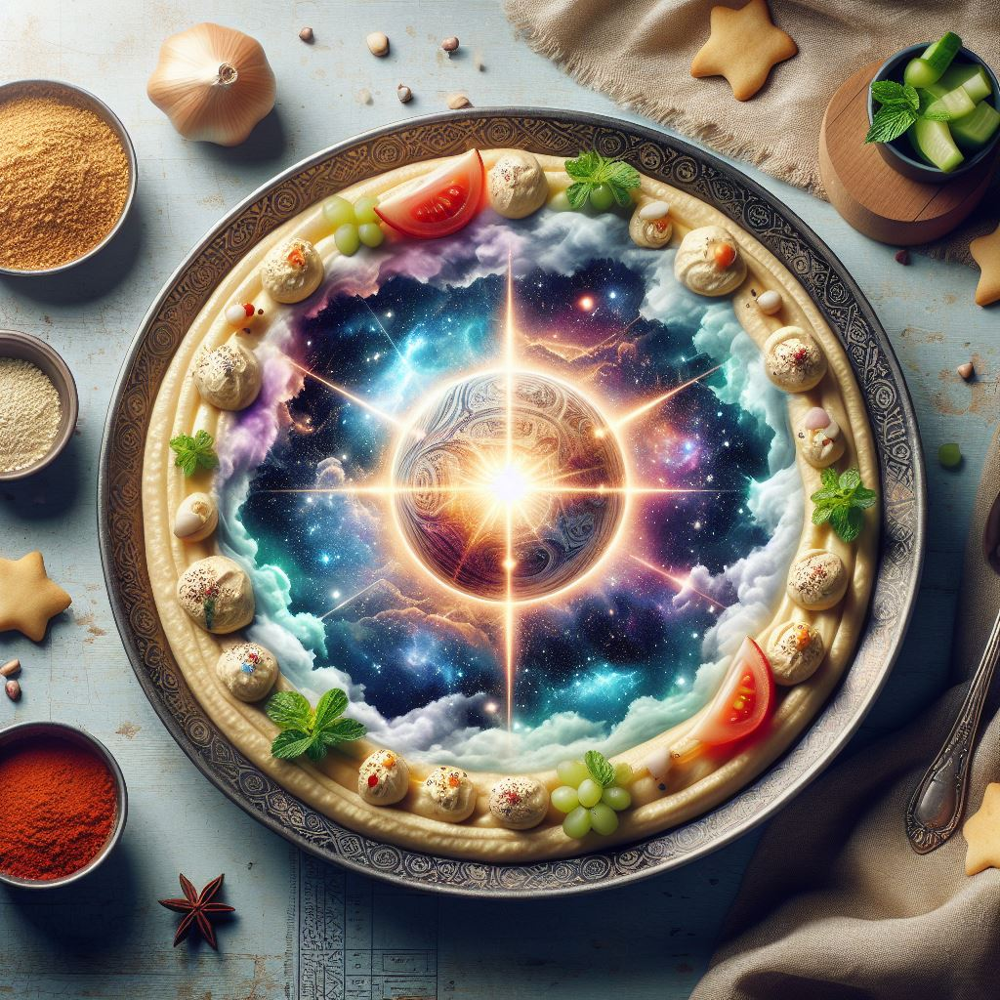

Heavenly Humus

Fill your soul!
This is a dish of divine inspiration,
a culinary creation that transcends the ordinary.
It’s a harmonious blend of flavors that evokes the sacred and the sublime,
inviting those who partake to savor a taste of the celestial.
Each spoonful is a silent hymn, a tribute to the stories and wonders that have shaped our spiritual heritage.
This humus is more than just a dish; it’s an experience,
a moment where the earthly and the heavenly converge.
It’s a reminder of the beauty and mystery that lie beyond our sight,
a humble offering that connects us to the timeless tales of faith and creation.
Ingredients
Manna Chickpeas
- 2 cups of chickpeas, nourished by the dew of heaven
Tahini from the Tree of Life
- 1/3 cup plus 1 tablespoon of tahini, made from seeds of the sacred
tree
Cumin of Canaan
- 1/2 teaspoon of cumin, harvested from the spice gardens of the Promised Land
Garlic from the Garden of Eden
- 3 cloves of garlic, plucked from the earth of paradise
Lemon Juice of the River Jordan
- Juice of 1/2 a lemon, blessed by the waters where John was baptized
Olive Oil from Mount Olive
- 1 tablespoon of olive oil, pressed from the olives grown on the mount of peace
Salt from Lot's Wife
- A pinch of salt, a reminder of the enduring covenant
Water from Bethesda's Pool
- 1/2 to 1 cup of water, stirred by the angel's touch